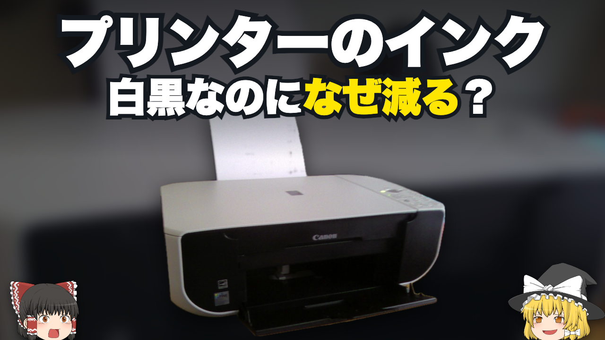A1 · 身近な支出の疑問【白黒だけなのに】なぜカラーインクが減るのか【ゆっくり解説】文言：プリンターのインク ／ 白黒なのになぜ減る？写真：Sir Prospect / CC0 / Wikimedia Commons写真の切り抜き・拡縮・文字合成あり。立ち絵：きつね（仮）
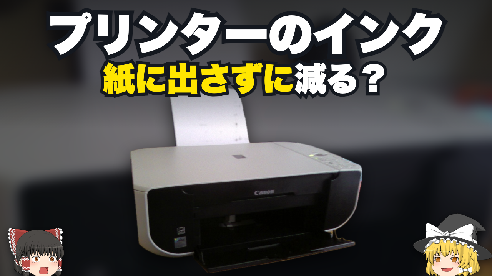A2 · 印刷していない間の消費【印刷してないのに】プリンターのインクはどこへ消える【ゆっくり解説】文言：プリンターのインク ／ 紙に出さずに減る？写真：Sir Prospect / CC0 / Wikimedia Commons写真の切り抜き・拡縮・文字合成あり。立ち絵：きつね（仮）
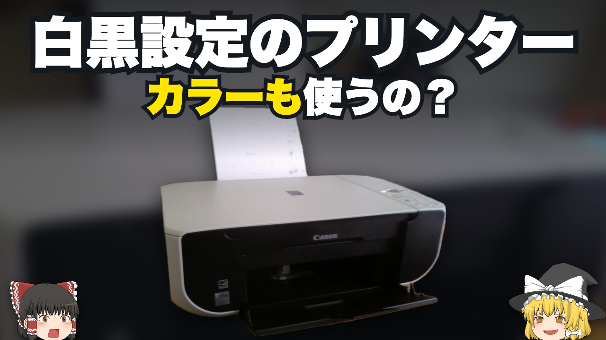A3 · 選んだ設定との食い違い【設定の落とし穴】白黒印刷でなぜ色のインクを使うのか【ゆっくり解説】文言：白黒設定のプリンター ／ カラーも使うの？写真：Sir Prospect / CC0 / Wikimedia Commons写真の切り抜き・拡縮・文字合成あり。立ち絵：きつね（仮）
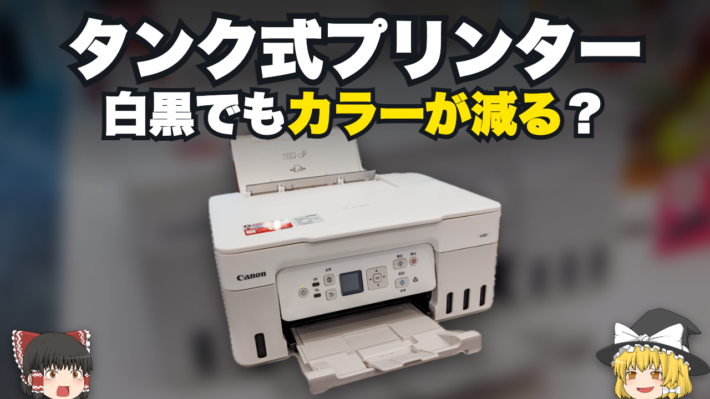A4 · タンク式にも広げる【タンク式でも】白黒印刷でなぜ色のインクが減るのか【ゆっくり解説】文言：タンク式プリンター ／ 白黒でもカラーが減る？写真：Dinkun Chen / CC BY-SA 4.0 / Wikimedia Commons写真の切り抜き・拡縮・文字合成あり。立ち絵：きつね（仮）
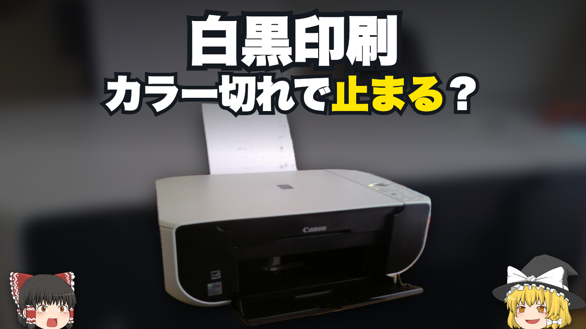A5 · 使えなくなる不便【黒は残ってる】プリンターはなぜ印刷を止めるのか【ゆっくり解説】文言：白黒印刷 ／ カラー切れで止まる？写真：Sir Prospect / CC0 / Wikimedia Commons写真の切り抜き・拡縮・文字合成あり。立ち絵：きつね（仮）
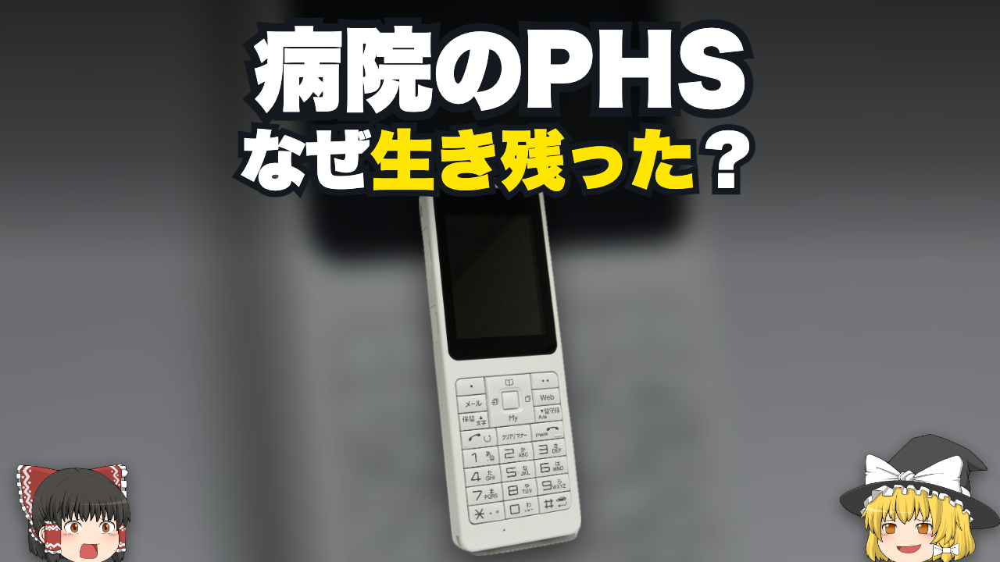B1 · 消えた物の別の居場所【消えたはず】PHSはなぜ病院で生き残ったのか【ゆっくり解説】文言：病院のPHS ／ なぜ生き残った？写真：Qurren / CC BY-SA 3.0 / Wikimedia Commons写真の切り抜き・拡縮・文字合成あり。立ち絵：きつね（仮）
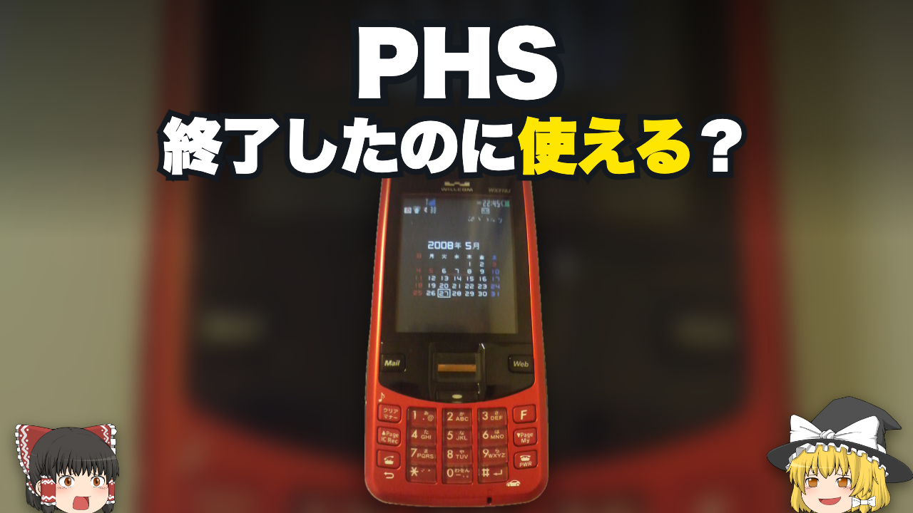B2 · 終了と利用の食い違い【終了のその先】PHSはなぜサービス終了後も使えたのか【ゆっくり解説】文言：PHS ／ 終了したのに使える？写真：pureheartabc / CC BY-SA 3.0 / Wikimedia Commons写真の切り抜き・拡縮・文字合成あり。立ち絵：きつね（仮）
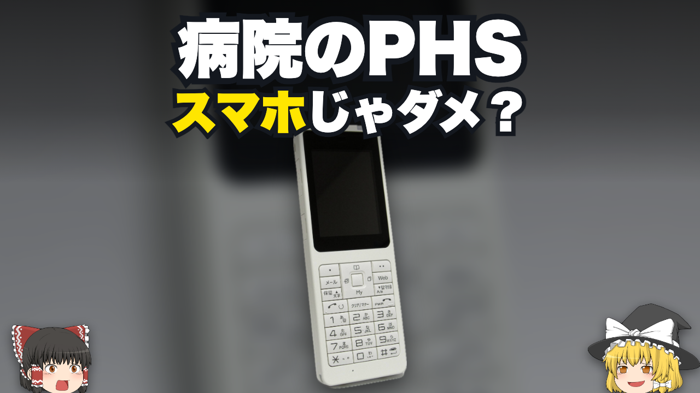B3 · 身近な代替品との比較【まさかの現役】PHSはなぜ病院で選ばれ続けたのか【ゆっくり解説】文言：病院のPHS ／ スマホじゃダメ？写真：Qurren / CC BY-SA 3.0 / Wikimedia Commons写真の切り抜き・拡縮・文字合成あり。立ち絵：きつね（仮）
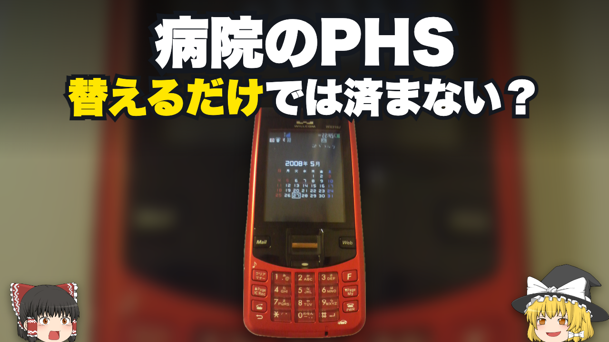B4 · 買い替えの裏側【置き換えの壁】病院のPHSはなぜすぐ替えられないのか【ゆっくり解説】文言：病院のPHS ／ 替えるだけでは済まない？写真：pureheartabc / CC BY-SA 3.0 / Wikimedia Commons写真の切り抜き・拡縮・文字合成あり。立ち絵：きつね（仮）
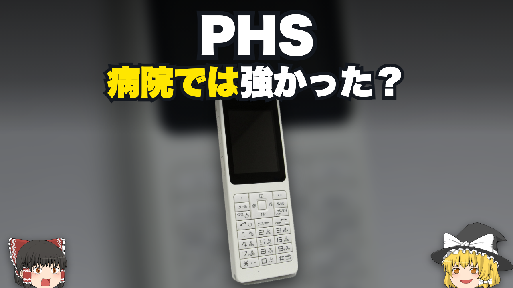B5 · 場所が変わると価値も変わる【違う勝ち筋】PHSはなぜ病院では長生きしたのか【ゆっくり解説】文言：PHS ／ 病院では強かった？写真：Qurren / CC BY-SA 3.0 / Wikimedia Commons写真の切り抜き・拡縮・文字合成あり。立ち絵：きつね（仮）
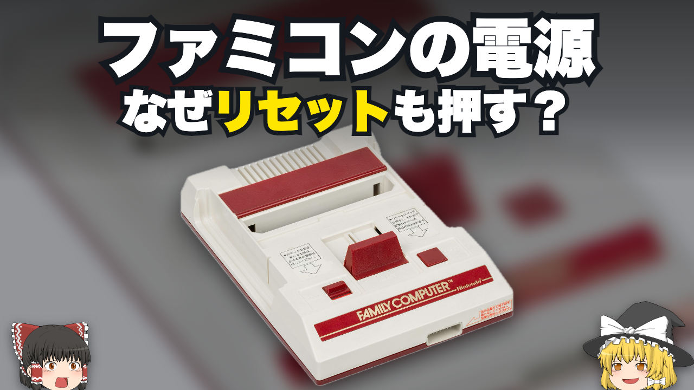C1 · 見覚えのある手順【あの手順】ファミコンはなぜリセットを押して切ったのか【ゆっくり解説】文言：ファミコンの電源 ／ なぜリセットも押す？写真：Evan-Amos / Public domain / Wikimedia Commons写真の切り抜き・拡縮・文字合成あり。立ち絵：きつね（仮）
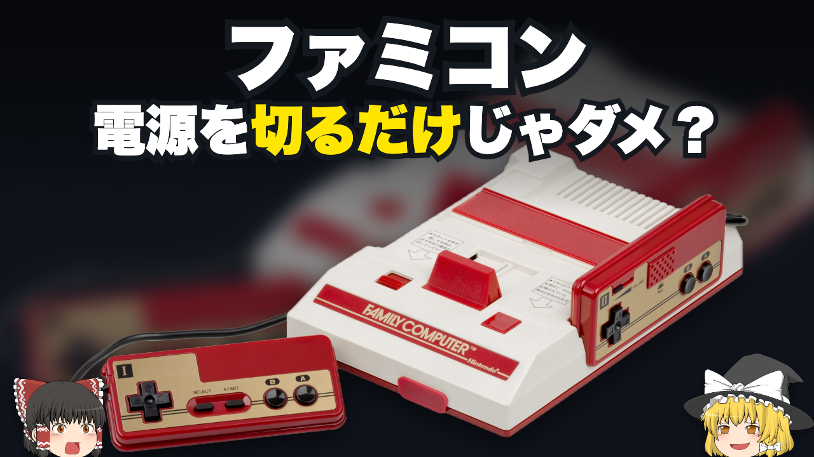C2 · 普段の操作との違い【最後にひと手間】ファミコンはなぜ切り方を指定したのか【ゆっくり解説】文言：ファミコン ／ 電源を切るだけじゃダメ？写真：Evan-Amos / Public domain / Wikimedia Commons写真の切り抜き・拡縮・文字合成あり。立ち絵：きつね（仮）
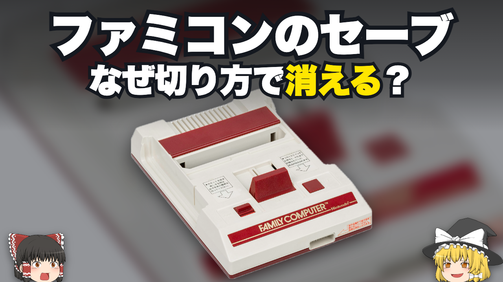C3 · 失いたくないデータ【保存したのに】ファミコンはなぜ切り方でデータが消えた【ゆっくり解説】文言：ファミコンのセーブ ／ なぜ切り方で消える？写真：Evan-Amos / Public domain / Wikimedia Commons写真の切り抜き・拡縮・文字合成あり。立ち絵：きつね（仮）
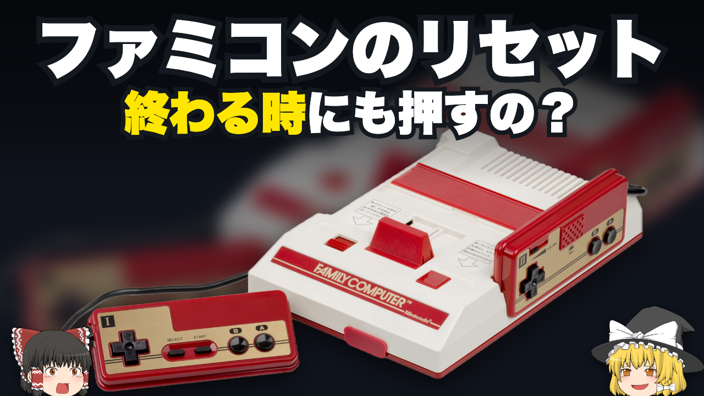C4 · ボタンの意外な役目【意外な役目】ファミコンはなぜ終了前にリセットするのか【ゆっくり解説】文言：ファミコンのリセット ／ 終わる時にも押すの？写真：Evan-Amos / Public domain / Wikimedia Commons写真の切り抜き・拡縮・文字合成あり。立ち絵：きつね（仮）
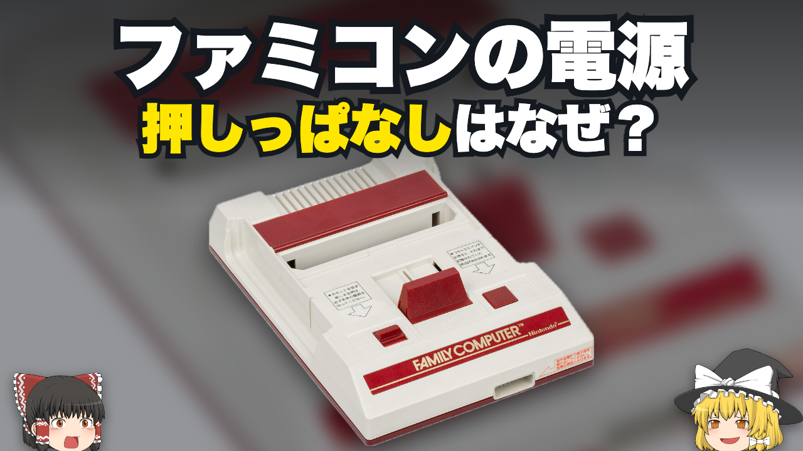C5 · 同時押しの細部【押したまま】ファミコンはなぜリセットしながら切るのか【ゆっくり解説】文言：ファミコンの電源 ／ 押しっぱなしはなぜ？写真：Evan-Amos / Public domain / Wikimedia Commons写真の切り抜き・拡縮・文字合成あり。立ち絵：きつね（仮）